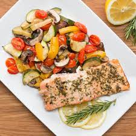

One-Pan Lemon Herb Salmon and Veggies

Salmon with roasted vegetables
This delicious recipe is great for weeknights. It's simple and affordable. You can substitute for almost any vegetable
to suit your liking. This recipe serves 4.
Ingredients
- 1 tbsp garlic, minced
- 1 tbsp dried rosemary
- 1 tbsp dried oregano
- 1 tbsp dried basil
- 1 tbsp olive oil
- 1 tbsp lemon juice
- 4 fillets salmon
- 1 large zucchini, chopped
- 1 cup mushroom (75g), sliced
- 1 yellow bell pepper, sliced
- 1 pt cherry tomato (470g), halved
- olive oil, to taste
- salt, to taste
- pepper, to taste